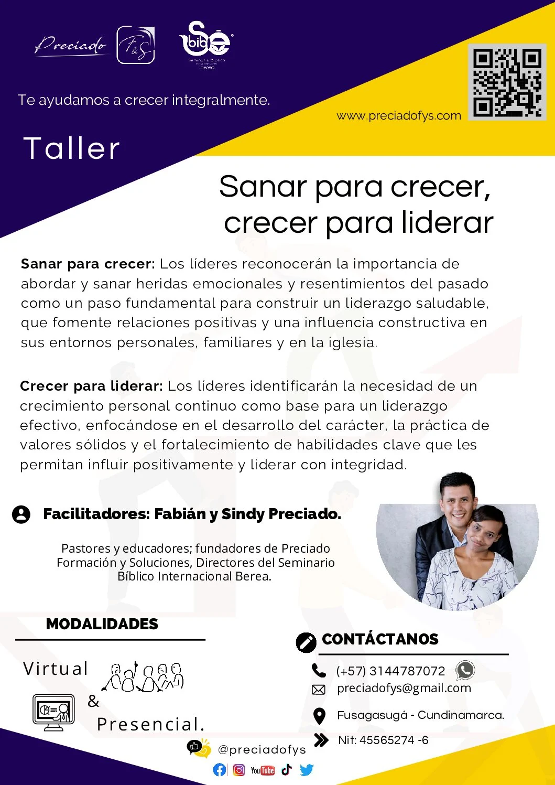

Taller
Sanar para crecer, crecer para liderar

Acerca de este taller
Sanar para crecer: Los líderes reconocerán la importancia de abordar y sanar heridas emocionales y resentimientos del pasado como un paso fundamental para construir un liderazgo saludable, que fomente relaciones positivas y una influencia constructiva en sus entornos personales, familiares y en la iglesia.
Crecer para liderar: Los líderes identificarán la necesidad de un crecimiento personal continuo como base para un liderazgo efectivo, enfocándose en el desarrollo del carácter, la práctica de valores sólidos y el fortalecimiento de habilidades clave que les permitan influir positivamente y liderar con integridad.
Facilitadores
Fabián y Sindy Preciado
Pastores y educadores; fundadores de Preciado Formación y Soluciones, Directores del Seminario Bíblico Internacional Berea.
Ver presentación original

